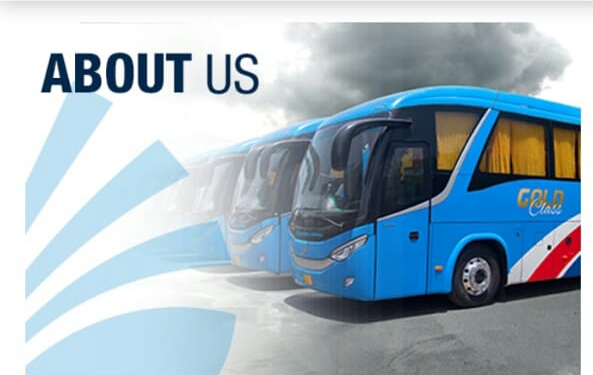

Daewoo pakistan express bus services limited is proud to launch Daewoo miles rewards program.This reward programas is the first of its kind in pakistan's road transport sector,And as the undisputed leader in the business,Daewoo brings yet another new service for its valued passengers.With Daewoo miles reawards program,You can get"Reward tickets"If you keep Daewoo Express as your preferred travel services.
The more you travel - The more reward tickets you get!!
Daewoo Miles rewards program is designed to facilitate and reward our esteemed pasengers through a loyalty scheme.whenevr you travel on daewoo Pakistan Express Buses,You will add up"Daewoo miles"Or"points" Which can them be redeemed/ utilized for free travel onces sufficient miles have Accumulated. All you need to do is to present your Daewoo miles card and a photo_ID to the ticket agent every time you travel on Daewoo.To avail this facility,You need to become a member of the Daewoo miles Reward program and get your Daewoo miles card.
There is no joining fee or membership cost for Daewoo miles program. The payment of Rs.500/- shall be credited to the member's account in the form of"Daewoo Miles" or points which can be used by the member at a later stage.However,these points shall only be activated once a member has earned Daewoo Miles through at least one travel journey.
Once a member has accumulated sufficient Daewoo mile /points,he/she will be entitled to obtain a free ticket to any destination provided there are equivalent miles /points available for that journey. Every accumulated Daewoo mile /point is equilvalent to ONE Rupee.
For further details of the Daewoo miles reward program,and the terms and condtions,please click here.Alternatively,you can contact Daewoo helpline UAN:111-007-008,or03311-007-008 or visit your nearest Daewoo terminal.